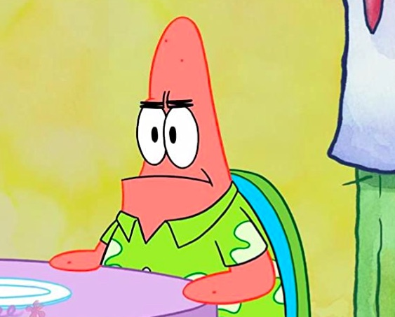
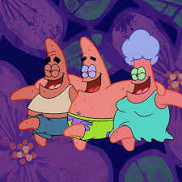

Hello world!
Welcome to my VERY PATRICK website
Some facts about patrick
- Patrick Is COOL
- Patrick Is AWSOME
- Patrick Is PATRICK
Lets see patricks family members
- Fatrick - Father
- Matrick - Mother
- Satrick - Sister
Dont know who patrick is? Click Me
Some facts about Patrick
- Voice Actor: Patrick Star is voiced by Bill Fagerbakke, who has been providing the character's voice since the show's inception in 1999.
- Dumb but lovable: Patrick is often portrayed as being not the brightest character in Bikini Bottom, but he is known for his good-hearted nature and unwavering loyalty to his best friend, SpongeBob.
- Residence: Patrick lives under a rock in the underwater city of Bikini Bottom.
- Favorite Hobby: He enjoys catching jellyfish with his net and has a pet jellyfish named Jellyfish.
- Pink Starfish: Patrick is a pink starfish with a green lower body.
- Job History: Throughout the series, Patrick has had various odd jobs, including working at the Krusty Krab, the local fast-food restaurant where SpongeBob works, and as a flag twirler.
- Family: Patrick has a family, including a sister named Sam Star, who is often mentioned but rarely seen in the series.
- Catchphrases: Patrick is known for his iconic catchphrases such as "I'm ready!" and "No, this is Patrick!"
- Idiosyncrasies: He is often portrayed as being easily distracted and having a childlike innocence, which leads to many humorous situations in the show.
- Popularity: Patrick is one of the most beloved characters from "SpongeBob SquarePants" and has become an iconic figure in popular culture, spawning merchandise, memes, and even his own spin-off show, "The Patrick Star Show."
Patricks Photos

